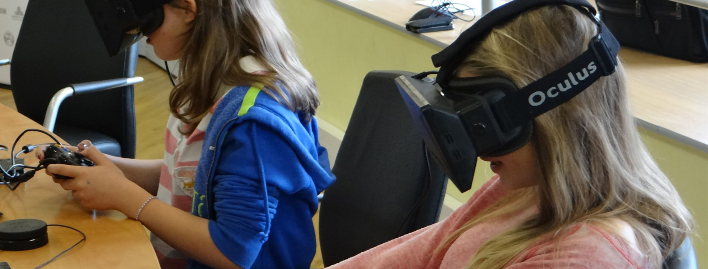
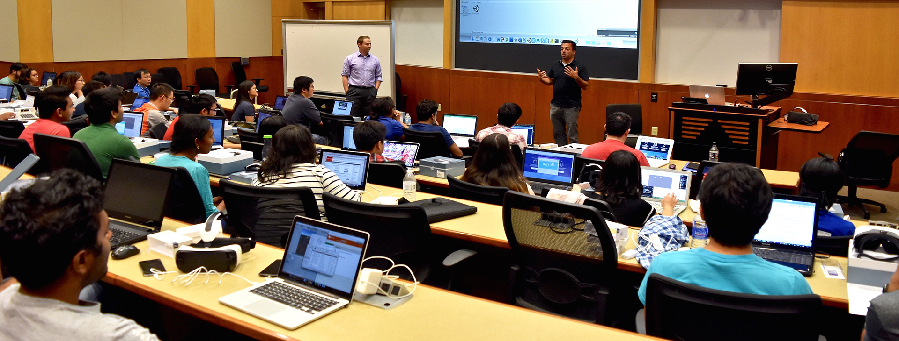
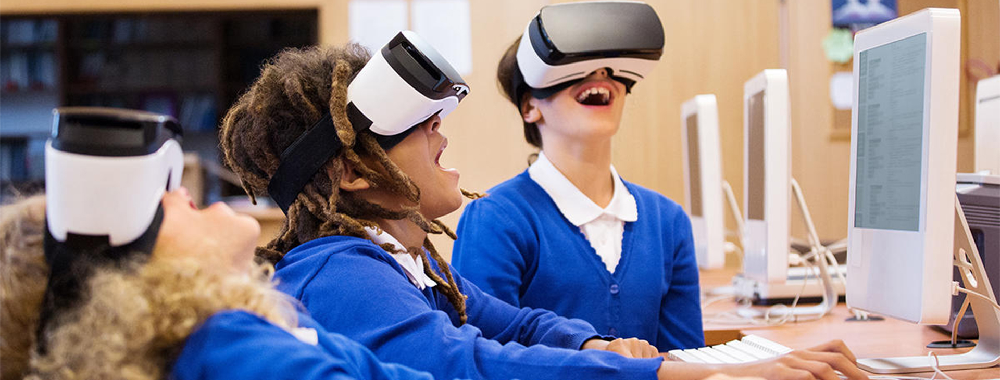

Las lecciones tradicionales pueden animarse con realidad virtual y realidad aumentada gracias al software inmersivo como LearnVr.

El cerebro se ilumina en los mismos puntos en los que lo haría si las acciones expuestas sobre el papel fuesen de verdad. Pero los entornos generados tecnológicamente para crear en los usuarios la percepción de estar inmersos en ellos pueden llevar a los estudiantes a experimentar directamente cualquier situación imaginable. LearnVr ofrece una posibilidad única de visitar una galería de arte, desde el aula o desde otro emplazamiento, en grupo o individualmente. Ayuda a los docentes a transportar virtualmente a los estudiantes a cualquier parte. Los estudiantes ingresan en las unidades de sus asignaturas: el románico, la formación de las tormentas o las operaciones matemáticas

Desde el comienzo de la enseñanza tradicional, nos sentimos más inclinados a enseñar usando lápiz y papel. Luego vino la enseñanza con experimentos y ahora nos encontramos ante un nuevo nivel de aprendizaje inmersivo en la forma de realidad virtual. En este, los estudiantes serán transportados a diversos lugares donde se podra conocerla geografia de la tierra través del uso de gafas aptas para dicho propósito.
La habilidad de introducir el conocimiento práctico en las aulas sin salir de ellas, hace que la experiencia educacional sea invaluable. En lugar de escuchar lecturas, los estudiantes pueden decir palabras a un micrófono y conseguir una experiencia real pero en un envoltorio virtual.

Crea interés sin importar la edad que se tenga, los estudiantes siempre amaran sentarse y vivir algo en lugar de leerlo. Las gafas de realidad virtual son muy interesantes, ya que pueden crear experiencias increíbles que nunca podrían ser vividas en la vida real. Definitivamente los estudiantes se sentirían más motivados a aprender con el uso de esta tecnología. Incrementa el compromiso hoy en día, a los maestros se les hace realmente difícil crear un compromiso productivo dentro del aula de clase. Con la realidad virtual presente en la educación, este aspecto nunca desaparecerá, ya que la mayoría de los estudiantes se sentirán más tentados a conversar acerca de sus experiencias dentro de su realidad virtual.